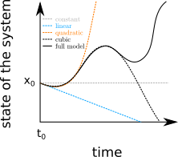
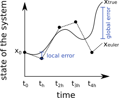
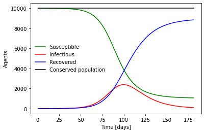
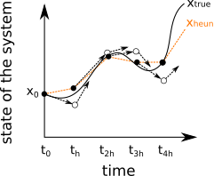
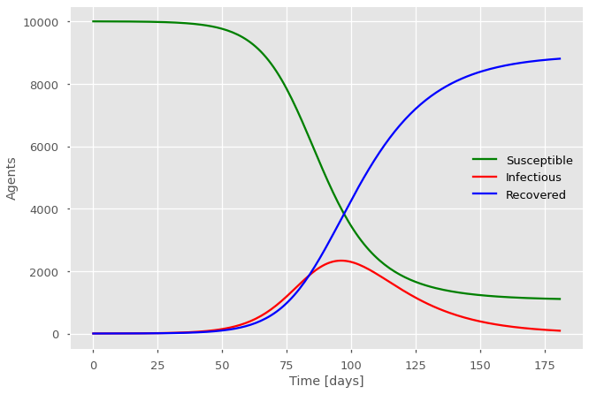

Numerical integration#
Systems of ordinary differential equations (ODEs) fully specify the dynamics of a system by telling us where a system is going. Given a point in their state space – i.e., given a value for all their variables such that we know where the system is among all possible states it could take – and given a value of all of their parameter — i.e., the quantities that don’t vary in time – we can follow these derivatives and track the time evolution of the system. To do so, we apply the same logic that you would use to track a car on the highway without knowing its final destination: If you know where it is, its current heading, and at what speed, you can predict where it will be in the short future. This logic is at the core of the algorithms we review here for numerical integration, the act of tracking variables by integrating or tracking their derivatives over time.
Taylor series#
Taylor series are the mathematical construct that formalize the logic of tracking a quantity through its current position, speed, acceleration, and so forth. Specifically, they say that (under some general conditions) we can reconstruct a function by knowing its value at one point and all of its derivative at the same point. To construct this representation of a time series of interest \(f(t)\), we write a power series such that we preserve the value of the function and of its derivatives at some point \(t_0\) without explicitly writing \(f(t)\).
We use a succint notation with primes and numbers to denote derivatives such that the first derivative of \(f(t)\) with regards to time is \(f'(t)\) or \(f^{(1)}(t)\) and the second \(f''(t)\) or \(f^{(2)}(t)\) and so on. We can therefore write the representation discussed above as $\( \begin{align} f(t) &= f(t_0) + f'(t_0)\times(t-t_0) + \frac{1}{2}f''(t_0)\times(t-t_0)^2 + \frac{1}{6}f'''(t_0)\times(t-t_0)^3 + \sum _{n=4}^{\infty} \frac{1}{n!}f^{(n)}(t_0)\times(t-t_0)^n \; . \end{align} \)$
This formula might look like magic with its weird factorial coefficients but can be derived with a simple logic. We ask that the value of \(f(t)\) to be equal to \(f(t_0)\) when \(t=t_0\) and all the terms parentheses take care of that. We then ask that the values of the \(n\)-th derivative be equal to \(f^(n)(t_0)\), and that we get since the \(n\)-th derivative of \((t-t_0)^n)\) is simply \(n!\) which is what we cancel out with the weird coefficients. Therefore, one can represent the unknown time series by adding progressively more terms to this series up to an exact representation with an infinite number of terms. In practice, this might look something like this:

Example: Euler’s method of integration#
If we look at the Taylor series of an unknown temporal function \(f(t)\) as represented above, we might be unsure how this helps our situation since we might only know our starting point \(f(t_0)\) and its first derivative \(f'(t_0)\) but all higher-order derivatives are unknown. However, one derivative might be all we need if we’re patient enough. Say we care about the state of the system after some time step \(h\) such that time is now \(t=t_0 + h\), we can write a simple approximation $\( \begin{align} f(t) \approx f_{e}(t_0+h) &= f(t_0) + f'(t_0)\times(t-t_0) = f(t_0) + hf'(t_0) \; . \end{align} \)$
This approximation is equivalent to saying that I can guess the position of car in 30 minutes if I know where it is and that it is going at 100km/h north. It’ll be 50km further up north! But if \(h\) is small enough, and if we are ok with measuring the speed of the system often, then we can theoretically get a perfect description by simply iterating this simple algorithm known as Euler’s method.

We will compare different method of integration by looking at the scale of their local error – i.e., the mistake we expect them to make at every step – and their global error when integrating a long trajectory. For small \(h\) going to zero, and comparing the formula of Euler’s method with a full Taylor series we find the local error $\( \begin{align} f(t) - f_{e}(t_0+h) &= f(t_0) + hf'(t_0) - f(t_0) - hf'(t_0) -\mathcal{O}(h^2) \propto h^2 \; . \end{align} \)$
This means that if we reduce our timestep \(h\) by 10, we should expect the local error to be 100 times smaller. Not a bad deal. However, say we are integrating up to a large time \(t=t_0+T\) such that we have to make \(T/h\) steps. We should expect the global error to be proportional to \(h\). Meaning that if we reduce our timestep \(h\) by 10, we should expect our global error to be 10 times smaller. We will still get the right answer as \(h\) goes to zero, but the error doesn’t fall very quickly.
Using Euler’s method, we can integrate the ODE system for the SIR model like so
import numpy as np
def run_Euler_SIR(tmax, IC, beta, alpha, h):
res = [] #data structure for list of results
S = IC[0]; I = IC[1]; R = IC[2] #set initial conditions
for t in np.arange(1,tmax/h): #discrete steps of Euler's methods
dSdt = -S * beta*I #derivative for S
dIdt = S*beta*I - alpha*I #derivative for I
dRdt = alpha*I #derivative for R
S+= dSdt*h #S(t+h)
I+= dIdt*h #I(t+h)
R+= dRdt*h #R(t+h)
res.append((S,I,R))
#map to array an unpacked list of tuples (with zip)
St,It,Rt = map(np.array, zip(*res))
return(St,It,Rt)
And actually run the model like so,
import matplotlib.pyplot as plt
#parameters
N = 10000 #population
beta = 1/6*1/N #transmission time per contact: 6 days. contacts per day: N
alpha = 1/15 #recovery period: 15 days
tmax = 182 #integration time (days, the unit of our rates)
h = 1.0 #integration step
#initial conditions
S = N-1; I = 1; R = 0
IC = [S,I,R]
(St,It,Rt) = run_Euler_SIR(tmax, IC, beta, alpha, h)
fig,ax = plt.subplots()
ax.plot(h*np.arange(1,tmax/h), St, 'g', label='Susceptible')
ax.plot(h*np.arange(1,tmax/h),It, 'r', label='Infectious')
ax.plot(h*np.arange(1,tmax/h),Rt, 'b', label='Recovered')
ax.plot(h*np.arange(1,tmax/h),St+It+Rt, 'k', label='Conserved population')
plt.xlabel('Time [days]')
plt.ylabel('Agents')
ax.legend(frameon=False);

Tip
As mentionned earlier, we do not need all three equations since the model has only two degrees of freedom. Integrating only two equations would be a bit faster. However, this allows us to test for the conserved population which should always remain fixed at \(N\). If we had made a mistake in our equations or our integrator, or if our timestep was too big, we would likely see it here. Try playing with the timestep \(h\) to make the code slower (more accurate) or faster (less accurate) and see what happens!
Example: Heun’s method of integration#
The goal of the numerical integration game is therefore to estimate higher order derivative in the full Taylor series of our unknown time series so that we can decrease the local error of our algorithm. We can illustrate how that’s done with another simple method that gets us more bang for our buck.
The first term of the Taylor series not included in the formulat for Euler’s method is \(\frac{1}{2}f''(t_0)\times (t-t_0)^2\). The quantity \(f''(t_0)\) is the rate of change of the derivative \(f'(t)\) at \(t=t_0\). We can computationally estimate this rate of change by measuring \(f'(t)\) more than once. This is the general idea behind all of the other methods we will use. During a time step \(h\), the rate of change of \(f'(t)\) can be estimated by its own slope: \(f''(t_0) = \left[f'(t_0+h)-f'(t_0)\right]/h\). Let’s insert this estimate in our Taylor series and call this Heun’s method of integration: $\( \begin{align} f(t) \approx f_{h}(t_0+h) &= f(t_0) + hf'(t_0) + h^2\frac{1}{2}\frac{f'(t_0+h)-f'(t_0)}{h}\\ &= f(t_0) + h\frac{f'(t_0+h)+f'(t_0)}{2} \approx f(t_0) + h\frac{f_e'(t_0+h)+f'(t_0)}{2} \end{align} \)$
In the last relation, we are replacing the true derivative of the system at \(t_0+h\) by its estimate following a step of Euler method because we obviously don’t actually know whether the system will be at \(t_0 + h\). This algorithm therefore uses a “look ahead” trick: Evaluate the current derivative, pretend you are doing a step of Euler’s method, evaluate the derivate at that point to estimate the second derivative, use that to do a better step. It can be illustrated like so, where dash black arrows are the evaluation of the first derivative and the dash orange time series is a better estimate of the true trajectory.

Despite the approximation in the final step of Heun’s formula, the algorithm can be shown to have a local and global error proportional to \(h^3\) and \(h^2\) respectively, when \(h\) is small. This means that if we divide \(h\) by 10, we actually improve our global trajectory by 100-fold!
Tip
To prove the error scaling of Heun’s method, one can write a Taylor series for the derivative \(f'(t_0+h)\) in the formula and compare the resulting series with the full Taylor series of \(f(t)\).
Easy and accurate integration#
Fancier numerical integrator use the same logic. By making more observations, algorithms can estimate higher-order derivatives and capture more terms in the true Taylor series of the time series we are looking for. Going forward, we will generally rely on \texttt{odeint} from the SciPy package. Here is that SIR example in this better solver.
import numpy as np
import matplotlib.pyplot as plt
plt.style.use(['ggplot', 'seaborn-talk'])
# We will use the odeint routine
from scipy.integrate import odeint
# Master Equations
def J(x, t, beta, alpha):
"""
Time derivative of the occupation numbers.
* x is the state distribution (array like)
* t is time (scalar)
* beta is the transmission rate
* alpha is the recovery rate
"""
dx = 0*x #setting the data structure for every variable
dx[0] = -beta*x[0]*x[1] #derivative for S
dx[1] = beta*x[0]*x[1] - alpha*x[1] #derivative for I
dx[2] = alpha*x[1] #derivative for R
return dx
# Parameters
N = 10000 #population
beta = 1/6*1/N #transmission time per contact: 6 days. contacts per day: N
alpha = 1/15 #recovery period: 15 days
# Time of observations
t_length = 182
t_vec = np.arange(0, t_length)
# Initial conditions
x_0 = np.zeros(3)
x_0[0] = N-1; x_0[1] = 1; x_0[2] = 0
# Integration
G = lambda x, t: J(x, t, beta, alpha)
x_path = odeint(G, x_0, t_vec)
# Plot
fig,ax = plt.subplots()
ax.plot(t_vec, x_path[:,0], 'g', label='Susceptible')
ax.plot(t_vec,x_path[:,1], 'r', label='Infectious')
ax.plot(t_vec,x_path[:,2], 'b', label='Recovered')
plt.xlabel('Time [days]')
plt.ylabel('Agents')
ax.legend(frameon=False);
